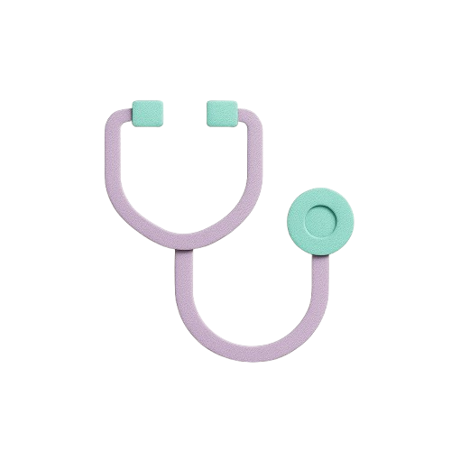

Bienvenidos a Salud a Mano
Información clara y accesible sobre salud pública en tu región.

Formá parte de la red Salud a mano
Sumá tus datos a nuestra red para que más personas accedan a tu atención.
Quiero sumar mi consultorio